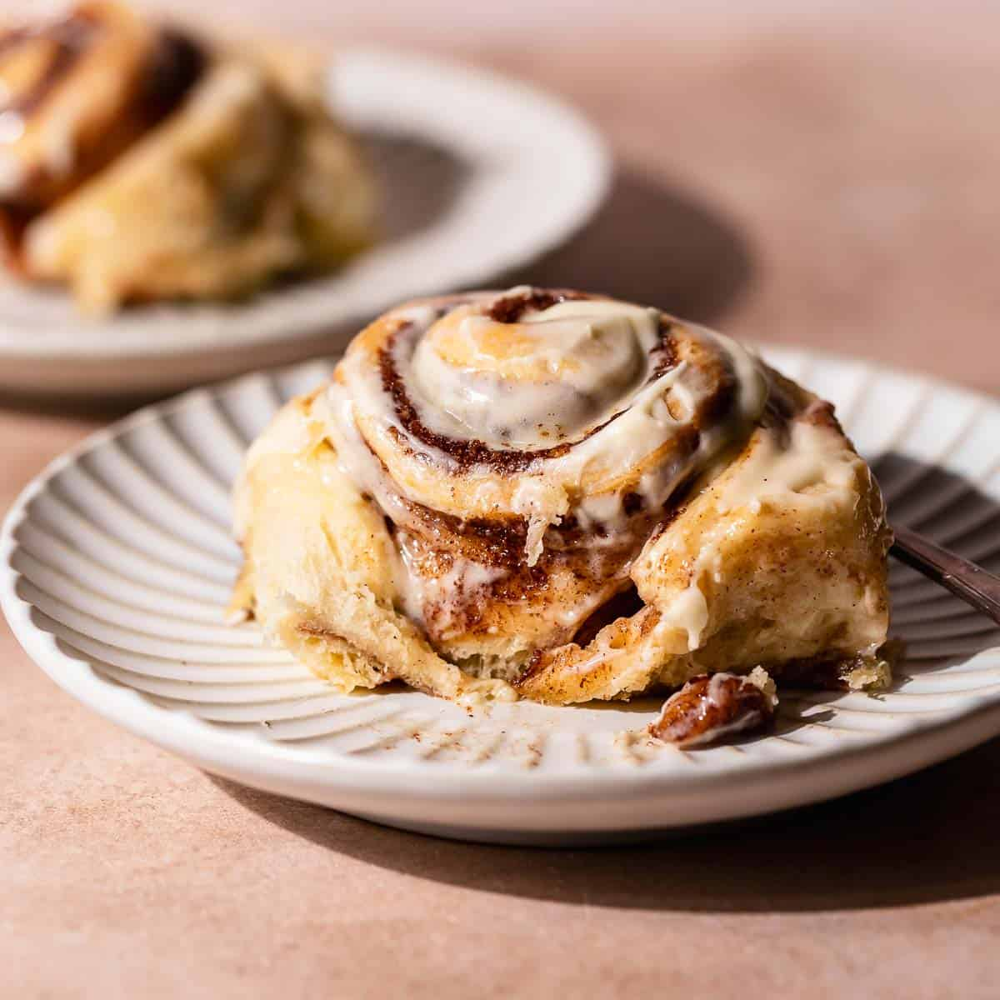

Cinnamon Roll

Description
These sweet and cinnamony cinnamon rolls are doughy and jam packed full of flavour,
covered in a cream cheese frosting are a perfect dessert with a warm drink or on their own.
Ingredients
For the dough
- 500g strong white bread flour (plus extra for dusting)
- 7g sachet fast-action dried yeast
- 1 tsp ground cinnamon
- 50g golden caster sugar
- 200ml warm milk
- 2 eggs
- 100g butter (softened, plus extra for the tin)
- 2 tbsp golden syrup
For the filling
- 150g light brown soft sugar
- 2 tbsp ground cinnamon
- 125g butter (at room temperature)
For the icing
- 50g soft cheese
- 50g icing sugar
- ¼ tsp vanilla extract
Method
- Tip all the ingredients for the dough, except the butter and golden syrup, into the bowl of a stand mixer with 1 tsp salt.
Use a paddle attachment to combine everything until it begins to come together into a dough, then tip out onto a floured surface and knead until smooth, about 2 mins.
Put it back in the bowl and gradually add the softened butter, 1-2 tsp at a time, while mixing on a medium setting.
Alternatively, knead the butter in by hand until smooth. Flatten the dough to a square roughly 20 x 20cm, then cover and freeze for 30 mins, or chill for at least 1 hr.
- Meanwhile, butter and line the base and sides of a deep baking tray, roughly 20 x 30cm.
To make the filling, mix the sugar with the cinnamon and a large pinch of sea salt, then set aside 2 tbsp.
Beat in the butter to form a thick paste.
- Lay the dough on a floured surface and roll to a neat rectangle roughly 35 x 25cm.
Spread over the filling so it’s completely covered. Fold the bottom third of the dough into the middle, then fold over again to cover the top third.
For the best results, chill the dough again for another 30 mins.
- Re-roll the dough to another rectangle about 40 x 30cm, then roll it up along the long edge into a tight log.
To get the neatest spirals, cut in half, lift onto a tray and freeze for 15 mins to firm up, then cut into 12 equal-sized slices.
Arrange the slices, spiral side-up, in the tin. Leave to prove in fridge for at least 1 hr, or up to 24 hrs.
- Heat the oven to 200C/180C fan/gas 6. Bake the buns for 20 mins, then scatter over the reserved cinnamon sugar and bake for 10-15 mins until deep brown.
- Meanwhile, mix the golden syrup with 2 tsp boiling water. As soon as the buns come out of the oven, brush them with the syrup glaze, then leave to cool a little.
To make the icing, beat the soft cheese, icing sugar and vanilla together, then gradually add 1-2 tbsp boiling water to create a thick but pourable consistency.
Drizzle the icing over the buns.